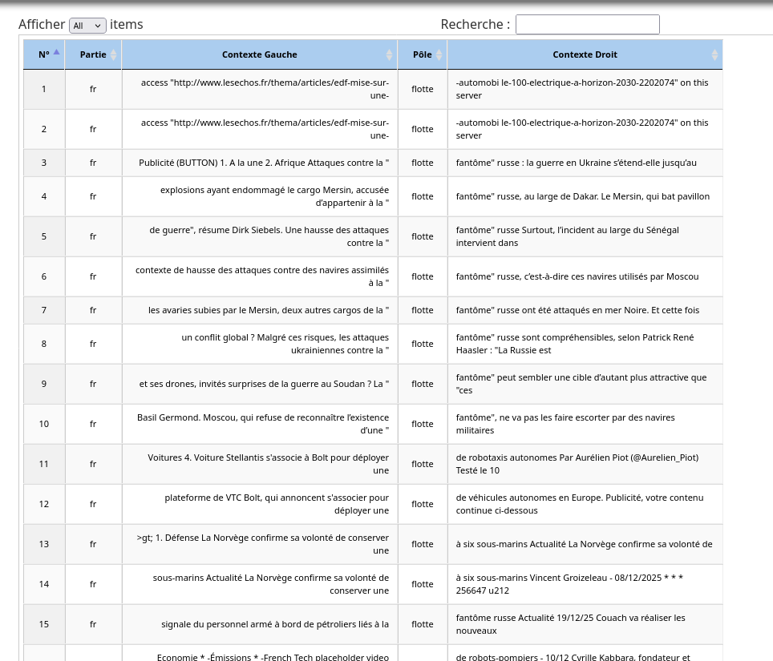

Analyse : Français
Étude des contextes et spécificités du mot "Flotte".

Interprétation
En français, on remarque que parmis les mots les plus fréquent en coocurrence avec notre mot, on trouve "Russie", "Ukraine", "fantôme", "Starlink". Ces mots pourtant très présents dans nos corpus français, le sont beaucoup moins dans ceux norvégiens ou anglais. En réalités, ils viennent d'une formulation beaucoup utilisée par les médias français pour désigner une flotte russe constituée de navires civils mais utilisés à des fins militaires.
Le mot "flotte" en français n'est pas d'usage courant, ce qui fait que fait que son utilisation dépend d'avantage de figures de style et de néologismes, ce qui est le cas ici. Alors que le mot "flotte" peut être remplacé dans le langage courant, "flotte fantôme" est une unité figée qui implique l'utilisation du terme flotte à chaque besoin de faire référence à la flotte fantôme.
Le terme "flotte" reste tout de même associé à un registre marin, avec "navire", "pétrolier", "marine", "eau" et aussi militaire avec "guerre", "attaque", "frappe", "frappé".